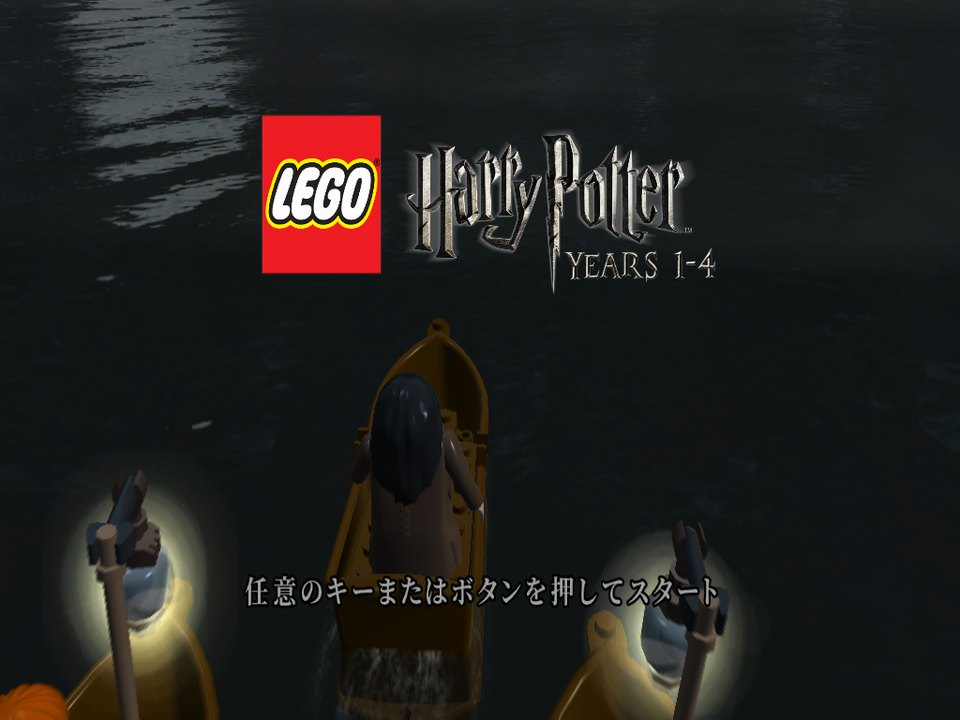
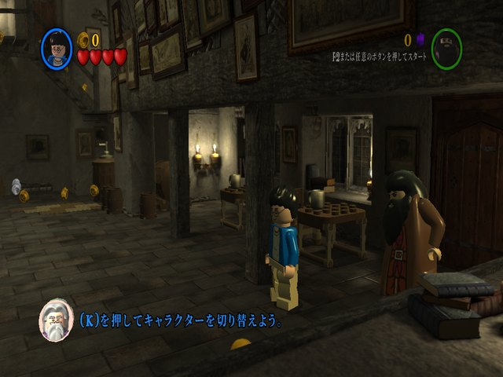
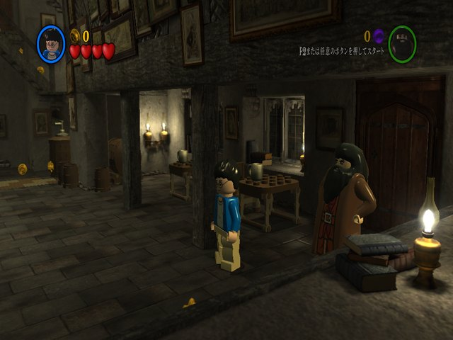
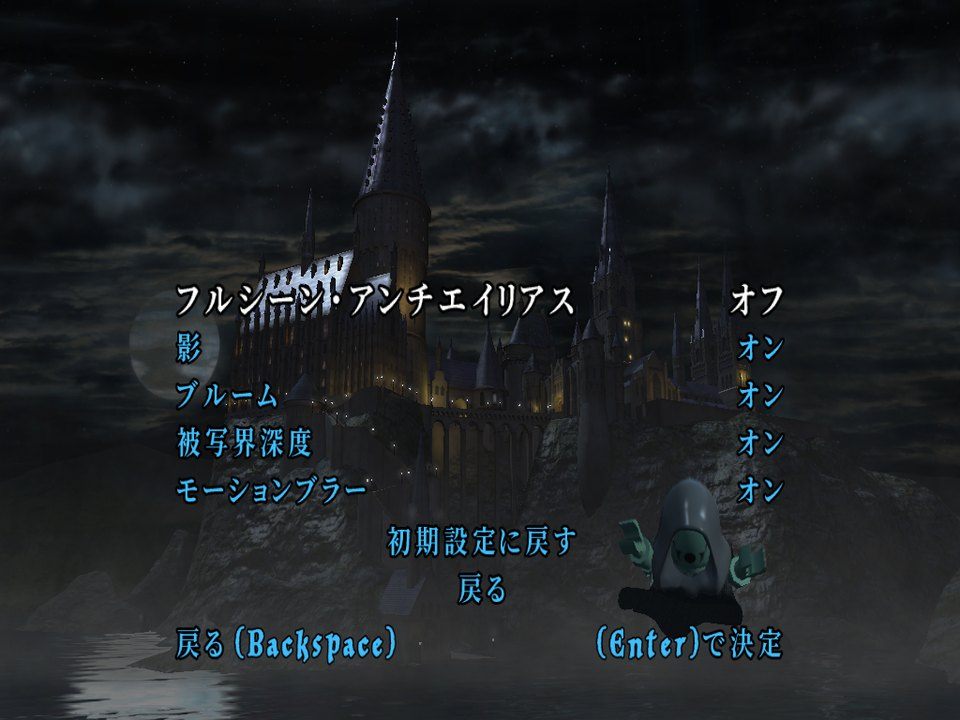

どんなゲーム？
LEGO ハリー・ポッター 第1章-4章は、2010年に発表された、映画『ハリー・ポッター』の1作目から4作目までを LEGO の世界で描くアクションアドベンチャーです。
「賢者の石」から「炎のゴブレット」まで、ハリー、ロン、ハーマイオニーたちとホグワーツで学ぶ4年間をたどります。呪文を覚えて謎を解き、魔法薬を作り、仲間と力を合わせて先へ進みます。
ステージの合間には、ホグワーツ城やダイアゴン横丁を自由に歩き回れます。せりふは声のない身ぶりで演じられるので、字幕はありません。
LEGO® Harry Potter: Years 1-4
Steam 版の「LEGO® Harry Potter: Years 1-4」（PC）を日本語で遊べるようにする、非公式のファンメイドパッチです。 ゲーム中のヒント、ホグワーツやダイアゴン横丁の案内、呪文やキャラクター・アイテムの名前、メニューや設定の画面まで、ゲームの中の文章を日本語にしています。 ゲームのフォルダに DLL をひとつ置くだけで使えます。ゲームのファイルは書き換えず、DLL を消せば英語に戻ります。
ダウンロード（GitHub）（v1.0）
LEGO ハリー・ポッター 第1章-4章は、2010年に発表された、映画『ハリー・ポッター』の1作目から4作目までを LEGO の世界で描くアクションアドベンチャーです。
「賢者の石」から「炎のゴブレット」まで、ハリー、ロン、ハーマイオニーたちとホグワーツで学ぶ4年間をたどります。呪文を覚えて謎を解き、魔法薬を作り、仲間と力を合わせて先へ進みます。
ステージの合間には、ホグワーツ城やダイアゴン横丁を自由に歩き回れます。せりふは声のない身ぶりで演じられるので、字幕はありません。




LEGOHP1_JP.zip を展開します。dinput8.dll を、ゲームのフォルダ（LEGOHarryPotter.exe があるフォルダ）に置きます。Steam のライブラリでゲームを右クリックし、「管理」→「ローカルファイルを閲覧」で開けます。Steam 版の「LEGO® Harry Potter: Years 1-4」で使えます。Steam の言語設定や Windows の言語にかかわらず、日本語で表示されます。
dinput8.dll を消せば、英語版に戻ります。dinput8.dll を使っているときは、同時には使えません。誤訳や不自然な訳に気づいたら、GitHub の Issues で教えてください。
OFL.txt にあります。